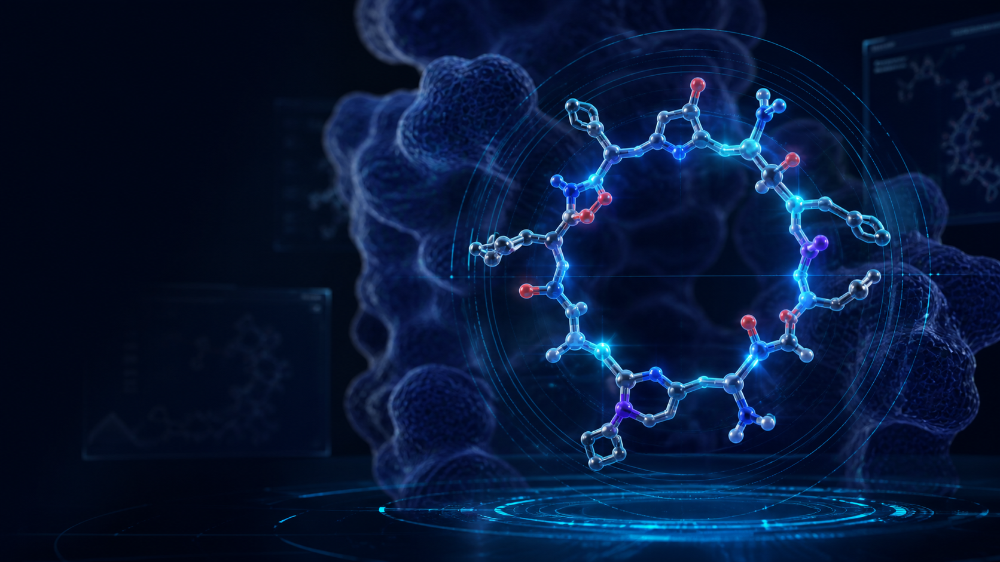
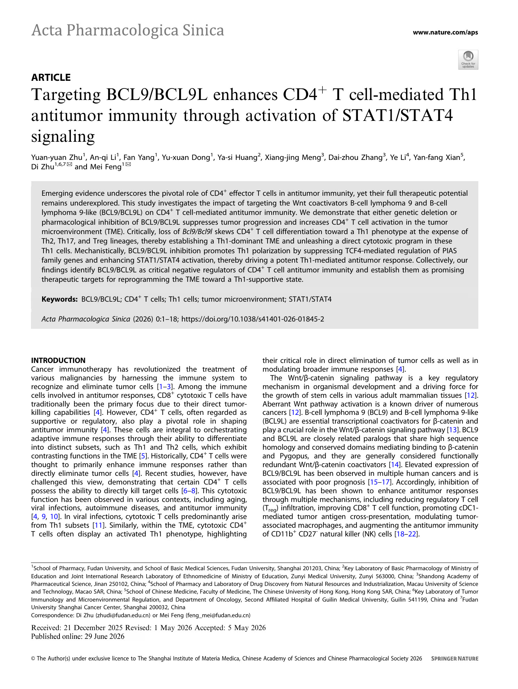

Computation meets experiment
Design hypotheses enter a testable, learnable and iterative discovery loop.
AI × CYCLIC PEPTIDE
A Hong Kong-based biopharmaceutical company integrating artificial intelligence, cyclic peptide data, experimental screening and drug engineering across four core platforms.

ABOUT US
Fuzhu Mingsheng is a Hong Kong-based biopharmaceutical company focused on cyclic peptide discovery and development. Selected for the HKSTP Ideation programme, the company is building its Hong Kong R&D and commercialization base while connecting target insight, candidate generation, screening, validation and iterative optimization.
Design hypotheses enter a testable, learnable and iterative discovery loop.
Molecular resources, structural design, display screening and engineering work together.
Affinity, selectivity, stability and developability are optimized in parallel.
JOHNSON & JOHNSON INNOVATION
Fuzhu Mingsheng participates in the Johnson & Johnson Innovation JLABS @ Shanghai ecosystem. The official company profile identifies pharmaceuticals, immunology and gastroenterology as its sectors, with work centered on the Wnt/β-catenin/BCL9 pathway and immune-inflammatory disease.
HKSTP STRATEGIC FIT
Fuzhu Mingsheng operates at the intersection of biomedical technology, artificial intelligence and translational drug development—connecting naturally with Health@InnoHK, AIR@InnoHK and HKSTP's biomedical ecosystem.
A defined patient problem, differentiated oral-drug concept, experienced team, intellectual-property foundation and measurable market and R&D milestones create a credible path from concept to validation.
Target-specific BCL9/Wnt biology, multimodal molecular data and closed-loop experimental learning distinguish the platform from general-purpose AI and compound its proprietary data advantage.
FOUNDER & SCIENTIFIC FOUNDATION
Professor of Pharmacology, Fudan University · BCL9/β-catenin and tumor immunology researcher
Professor Zhu's work spans the BCL9/β-catenin protein interaction, the tumor immune microenvironment and peptide therapeutics. His hsBCL9 program connects target biology, lead-peptide optimization and validation across multiple disease settings, providing an important scientific foundation for Fuzhu Mingsheng's cyclic peptide platforms.
Google Scholar profile ↗
HONG KONG ACADEMIC COLLABORATION
The 2026 study, with DI Zhu as a corresponding author and Yan-fang Xian of CUHK's School of Chinese Medicine as a co-author, reports that targeting BCL9/BCL9L enhances CD4+ T-cell-mediated Th1 antitumor immunity through STAT1/STAT4 activation.
Acta Pharmacologica Sinica · DOI 10.1038/s41401-026-01845-2
Read the publication ↗RESEARCH PROGRAM
Publicly discoverable hsBCL9-related research involving DI Zhu, ordered by publication year. Peer-reviewed papers and preprints are identified separately.
Science Advances · hsBCL9CT-24 lead discovery and immune-checkpoint resistance
Frontiers in Oncology · Tumor endothelial cells and the immune microenvironment
Frontiers in Oncology · hsBCL9CT-24 and cancer-associated fibroblasts
Signal Transduction and Targeted Therapy · CD8+ T-cell checkpoint biology
Oncogene · BCL9/BCL9L targeting in triple-negative breast cancer
Frontiers in Pharmacology · hsBCL9CT-24 and tumor-associated macrophages
Frontiers in Pharmacology · hsBCL9CT-24 in combination with EpCAM CAR-T
Signal Transduction and Targeted Therapy · hsBCL9Z96 and antigen presentation
Nature Communications · hsBCL9Z96 and immunotherapy resistance in liver cancer
Authorea Preprints · hsBCL9Z96 and liver fibrosis PREPRINT
Signal Transduction and Targeted Therapy · hsBCL9Z96 and pulmonary fibrosis
Acta Pharmacologica Sinica · Fudan University and CUHK School of Chinese Medicine collaboration
CORE PLATFORMS
Each platform addresses a critical step and connects through shared data and model learning.
AI CYCLIC PEPTIDE DESIGN
Beginning with target structure and mechanism, generative AI, structural computation and multiparameter optimization explore sequence and conformational space to prioritize high-potential cyclic peptide candidates.
DATA & SCREENING
A knowledge base of natural and synthetic cyclic peptides connects diverse data resources, sequence-to-structure tools, high-throughput experimental screening and intelligent analysis—accelerating the path from molecular resources to lead discovery.
ANTIBODY → CYCLIC PEPTIDE
Starting from an antibody recognition interface, the platform converts antibody-derived binding information into cyclic peptide candidates. A switchable PD-L1 epitope configuration library supports alternative epitope-design strategies.
DISPLAY & NGS LEARNING
Computational design, DNA construction, macrocyclic peptide display, magnetic-bead enrichment, dual-color FACS and NGS learning form a closed loop. Binding, expression and selectivity data continuously update the model.
INTEGRATED WORKFLOW
Target insight and cyclic peptide generation
Database knowledge and candidate space
Antibody-interface cyclization
Display, NGS and model updates
COMPANY & PLATFORM FILM
Discover the company's mission, scientific foundation, team, progress, awards and patents—then see how its four cyclic peptide platforms work together.
COLLABORATION
Connect with us on target-driven design, data resources, candidate screening and platform collaboration.
Back to top